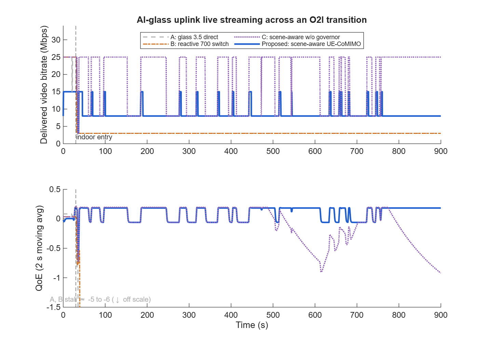
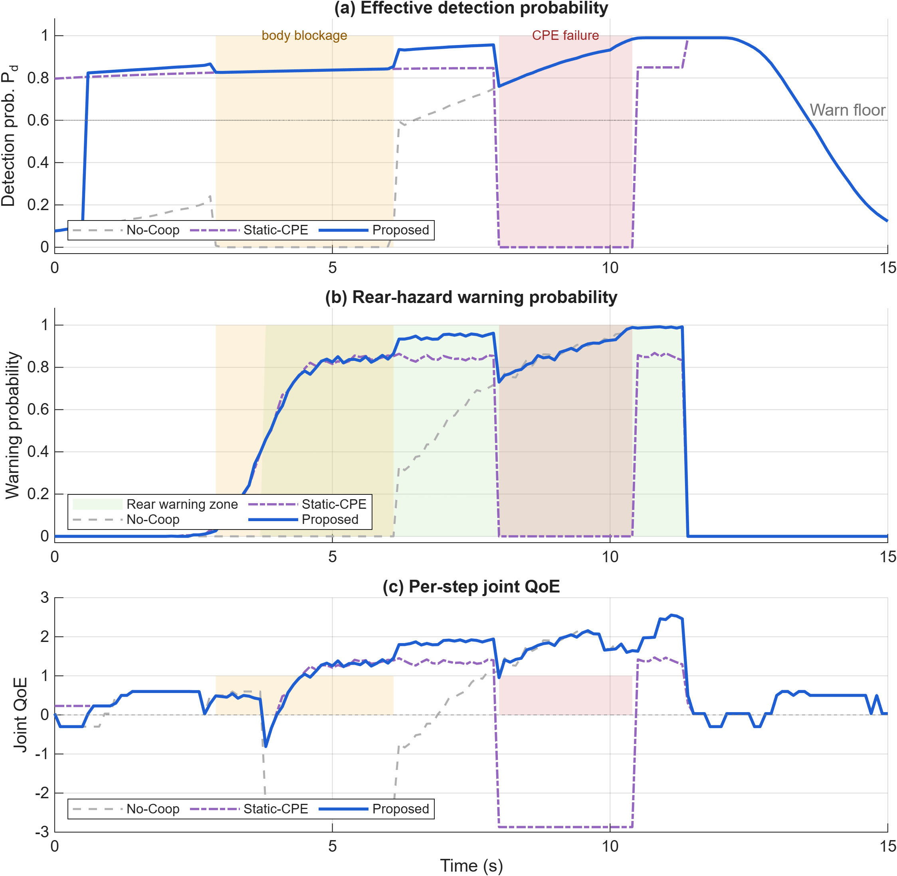

Supplementary material — interactive scenario demos and MATLAB reference code for the two representative use cases.
Manuscript submitted to IEEE Communications MagazineA creator wearing AI glasses live-streams first-person video while walking from an outdoor street into a venue and then dwelling indoors for a long session. The glasses offload video over 5 GHz Wi-Fi to a smartphone hub agent that orchestrates five uplink modes: direct glass cellular (fallback only), smartphone relay on 3.5 GHz or 700 MHz, packet-split cooperation with a nearby shared CPE, and full delegation to the CPE. The agent optimizes the creator's QoE — stall avoidance, glass temperature, and glass/phone battery — rather than peak throughput. The interactive game and the MATLAB batch script implement the identical control logic.

A creator rides an electric scooter while live-streaming. The smartphone acts as hub agent and sensing transmitter, the smartwatch as the default bistatic receiver, and a scooter-mounted CPE as an auxiliary receiver. A cyclist approaches from the rear blind spot and triggers two successive disturbances: a body-blockage interval that blinds the watch echo path, and a transient loss of the scooter CPE. Three policies are compared — watch-only (No-Coop), static CPE recruitment (Static-CPE), and the proposed agentic policy that recruits the CPE on confidence drop and re-plans to phone–watch bistatic sensing on the failure report. Detection uses a waveform-level CFAR model via a cached Pd(SINR) lookup.
